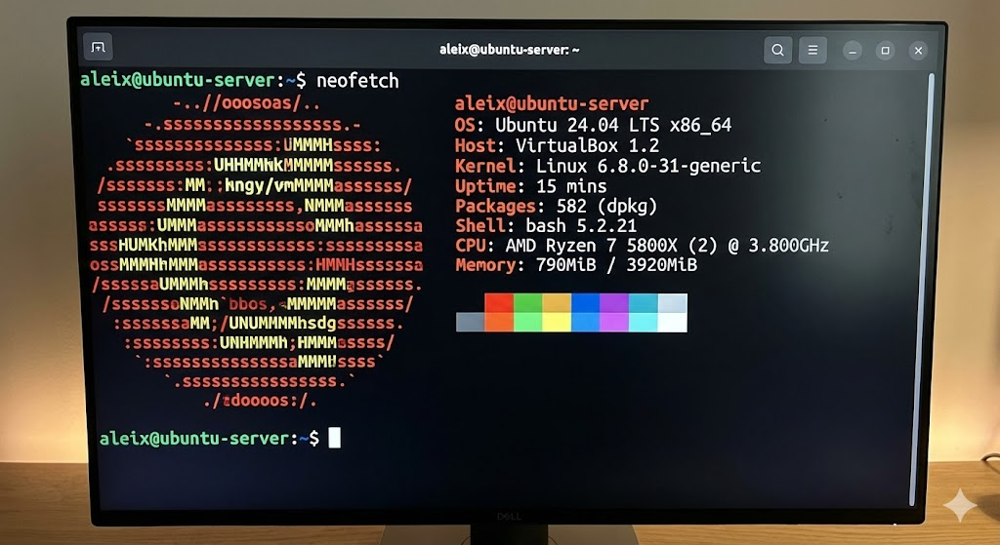
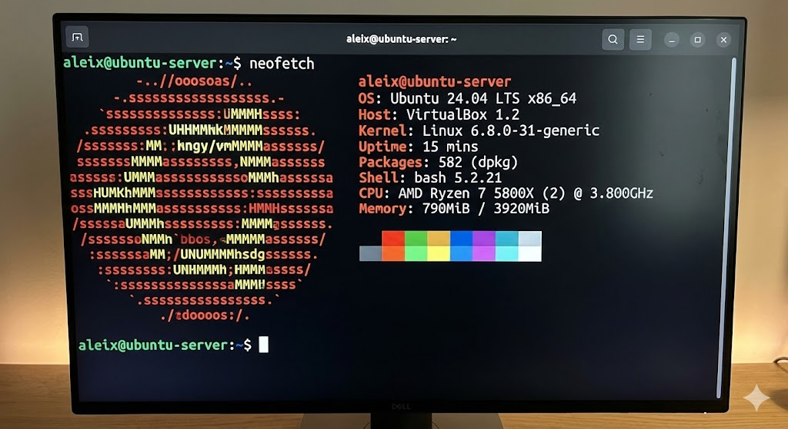

1. ISO Download & Boot Media
Download the official ISO image from the vendor's website and configure the Virtual Machine (or bootable USB) to boot from it.
Step-by-step guide on installing and configuring a Linux server (Ubuntu/Debian) on a virtual machine.
Download the official ISO image from the vendor's website and configure the Virtual Machine (or bootable USB) to boot from it.
Select the operating system language and configure the disk partitions. For this server, we used LVM (Logical Volume Management).
Set up the hostname, create the main user with sudo privileges, and configure a static IP address for the network interface.
During the software selection phase, ensure that OpenSSH Server is checked to allow remote management later.
Reboot the system, log in via terminal, and run sudo apt update && sudo apt upgrade to finalize the deployment.
 
